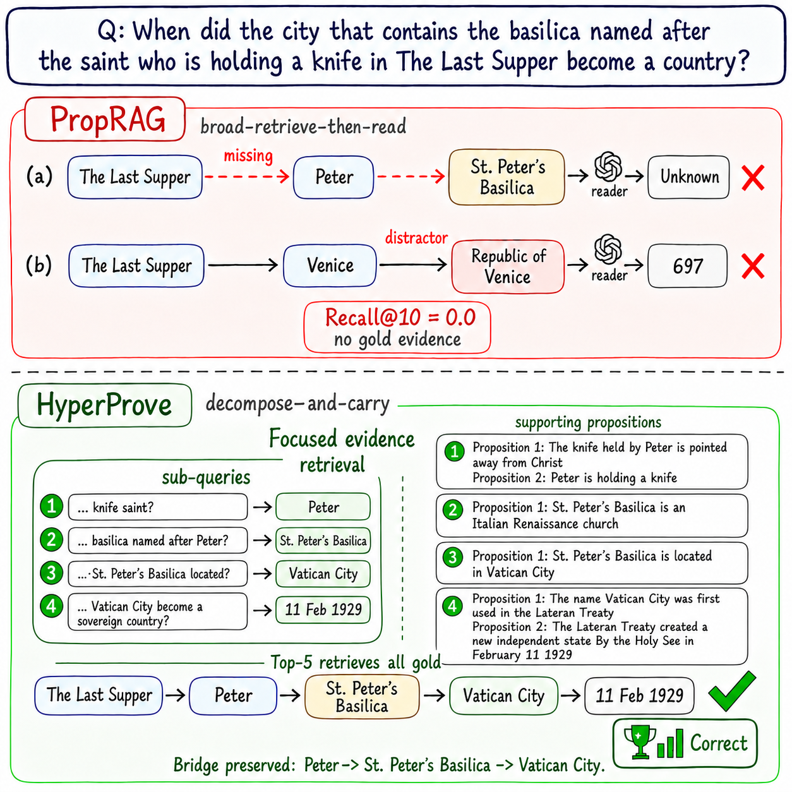
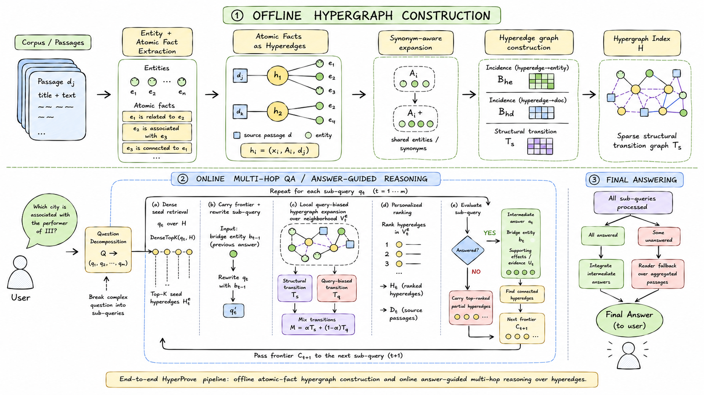
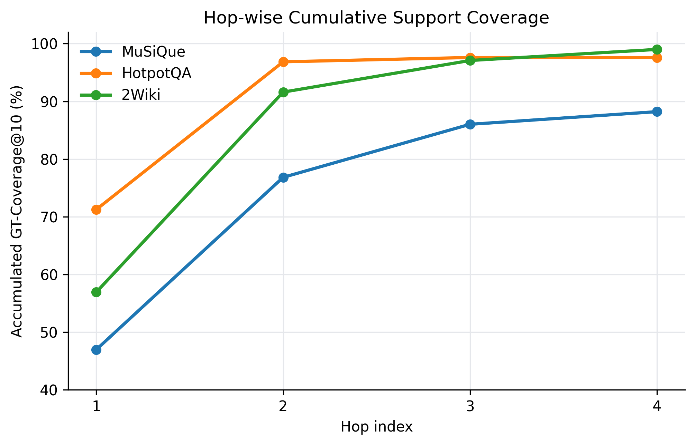
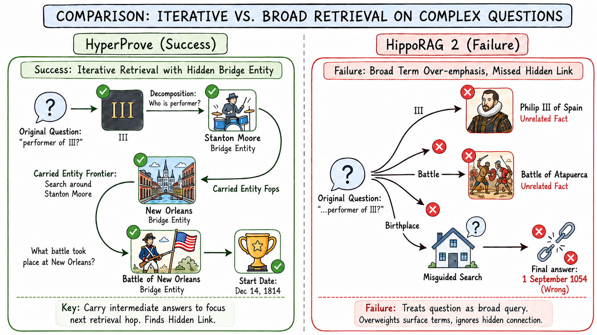

HyperProve: Answer-Guided Hypergraph Expansion for Multi-Hop Question Answering
Abstract
Multi-hop question answering often fails when retrieval treats evidence as isolated matches to the original question, since the facts needed to answer a complex question are usually connected through intermediate entities, relations, and constraints.
We propose HyperProve, a retrieval-augmented QA framework that addresses this challenge by coupling question decomposition with answer-conditioned expansion over a hypergraph of atomic facts. HyperProve does not use atomic facts, hypergraphs, or iterative retrieval in isolation; instead, it carries intermediate answers and supporting hyperedges as retrieval state, then uses that state to bias the next local hypergraph expansion. This design enables HyperProve to construct coherent evidence chains for final answer generation while making the retrieval process stateful and fact-centered.
Across multi-hop QA benchmarks, HyperProve achieves the best overall performance in our evaluation, outperforming the strongest baselines by an average relative improvement of 6.2% in answer accuracy and 4.9% in F1.
Why Multi-Hop Retrieval Breaks

Figure 1: A 4-hop question. PropRAG fails to connect Last Supper to Peter and drifts to the distractor chain Venice → Republic of Venice; HyperProve keeps the bridge entities and the correct path.
The bottleneck. Retrieval scores facts against the original question, but in multi-hop QA the next useful fact may not be similar to that question at all — it becomes relevant only after an earlier fact has established the right bridge. It is missed, or retrieval drifts to a look-alike distractor.
Graph RAG (HippoRAG2, PropRAG, HyperGraphRAG, HGRAG) keeps structure, but expands from a fixed frontier scored against the unchanged question.
Iterative RAG (IRCoT, HopRAG, ChainRAG) rewrites queries across hops, but carries only text forward, losing the evidence that justified the previous answer.
HyperProve couples the two: resolved answer + supporting atomic facts → next-hop structural frontier.
Method Overview
HyperProve builds an offline, synonym-aware hypergraph of atomic facts, then answers a question online by decomposing it into dependent sub-queries, carrying each intermediate answer forward as a bridge entity, and expanding over local hypergraph neighborhoods.

Figure 2: Overall pipeline — (1) offline hypergraph construction, (2) online answer-guided multi-hop reasoning, (3) final answering.
Atomic-Fact Hypergraph
Each passage is split into self-contained atomic facts. A fact is a hyperedge joining all of its participating entities and its source passage, so n-ary facts with temporal or causal qualifiers do not collapse into binary triples:
Entity names whose embeddings have cosine > 0.8 are merged as synonyms. Facts are linked when they share an entity or a passage; inverse degrees down-weight hubs:
Query-Biased Hyperedge Retrieval
Around the current seeds, a local graph \(G_t^\star\) of at most 600 hyperedges is built. Neighbors are re-weighted by similarity to the rewritten sub-query \(q'_t\) and kept only above a threshold \(\theta\):
Structure and query relevance are mixed, then facts are ranked with Personalized PageRank:
Answer-Guided Hyperedge Reasoning
The question is decomposed into dependent sub-queries \(Q \to (q_1,\dots,q_m)\). Each hop is seeded by the carried frontier plus fresh dense hits:
When a sub-query is answered, its bridge entity \(b_t\) and the entities of its supporting hyperedges \(\mathcal{U}_t\) define the next frontier:
Otherwise the top-ranked hyperedges are carried as partial evidence. Defaults: \(K_c = K_d = 10\), \(\tau = 1\), \(\theta = 0.4\), \(\alpha = 0.5\), \(\gamma = 0.85\).
The Answer-Guided Reasoning Loop
Each sub-query runs the same five steps. What moves from one hop to the next is not just text, but the answer and the hyperedges that prove it.
↻ next sub-query \(q_{t+1}\), repeated for \(t = 1, \dots, m\)
- \((q_1,\dots,q_m) \gets\) Decompose\((Q)\); \(\ \mathcal{R}, \mathcal{C}_1 \gets \emptyset\) ▷ answers so far, carried frontier
- for \(t = 1\) to \(m\) do
- 1\(q'_t \gets\) Rewrite\((q_t, \mathcal{R})\) ▷ “… named after Peter?”
- 2\(S_t \gets\) TopK\((\mathcal{C}_t, 10)\ \cup\) DenseTopK\((q'_t, \mathcal{H}, 10)\)
- 3\((\mathcal{H}_t, \pi_t) \gets\) LocalPPR\((S_t, q'_t)\) ▷ rank facts with \(M_t\)
- 4\((\text{ok}, a_t, \mathcal{U}_t) \gets\) Evaluate\((q_t, \mathcal{H}_t)\) ▷ \(\mathcal{U}_t\): supporting facts
- 5if ok: \(\mathcal{R} \mathrel{+}= (q_t, a_t)\); \(\ \mathcal{C}_{t+1} \gets\) Hyperedges\(\big(a_t \cup \mathrm{Entities}(\mathcal{U}_t)\big)\)
- else: \(\mathcal{C}_{t+1} \gets\) TopK\((\mathcal{H}_t, \pi_t, 10)\) ▷ keep partial evidence
- return Integrate\((Q, \mathcal{R})\) if all hops answered, else Reader\((Q,\) top-10 passages\()\)
Main Results
Evaluated on 1,000 questions each from MuSiQue, HotpotQA and 2WikiMultiHopQA. Every method uses BGE-M3 as retriever and GPT-OSS-20B as backbone LLM; metrics are LLM-as-a-judge accuracy, Exact Match and token-level F1, mean over three runs.
Table 1: Accuracy, EM and F1 on three multi-hop QA benchmarks
| Method | MuSiQue | HotpotQA | 2WikiMultiHopQA | ||||||
|---|---|---|---|---|---|---|---|---|---|
| Acc. | EM | F1 | Acc. | EM | F1 | Acc. | EM | F1 | |
| Dense Retrieval | |||||||||
| Contriever | 47.80± 0.28 | 22.30± 0.30 | 32.10± 0.26 | 55.55± 0.21 | 44.40± 0.24 | 57.50± 0.21 | 69.60± 0.20 | 38.50± 0.24 | 43.70± 0.21 |
| BGE-M3 | 51.50± 0.25 | 27.80± 0.27 | 39.70± 0.24 | 68.12± 0.19 | 47.80± 0.22 | 61.80± 0.19 | 72.18± 0.18 | 48.20± 0.22 | 54.50± 0.19 |
| Structured (Graph) Retrieval | |||||||||
| HippoRAG2 | 52.00± 0.36 | 37.20± 0.40 | 48.60± 0.34 | 81.70± 0.29 | 62.70± 0.33 | 75.50± 0.29 | 86.40± 0.28 | 65.00± 0.34 | 71.00± 0.29 |
| PropRAG | 50.90± 0.30 | 29.30± 0.33 | 46.73± 0.29 | 85.80± 0.24 | 57.80± 0.28 | 73.79± 0.24 | 77.50± 0.23 | 58.00± 0.29 | 68.78± 0.24 |
| HyperGraphRAG | 55.13± 0.43 | 42.20± 0.47 | 53.80± 0.40 | 77.89± 0.34 | 63.90± 0.39 | 73.80± 0.33 | 77.72± 0.33 | 68.30± 0.40 | 71.30± 0.33 |
| HGRAG | 58.60± 0.39 | 41.19± 0.43 | 55.04± 0.37 | 80.10± 0.31 | 54.90± 0.36 | 69.43± 0.30 | 85.00± 0.30 | 64.10± 0.37 | 74.10± 0.31 |
| Iterative Retrieval | |||||||||
| IRCoT | 56.67± 0.64 | 34.10± 0.72 | 47.60± 0.59 | 85.23± 0.49 | 55.70± 0.56 | 71.20± 0.47 | 83.65± 0.47 | 60.70± 0.57 | 74.30± 0.47 |
| T2RAG | 54.67± 0.47 | 34.30± 0.52 | 45.60± 0.44 | 81.33± 0.36 | 54.20± 0.42 | 67.30± 0.35 | 83.75± 0.35 | 66.70± 0.43 | 74.40± 0.36 |
| HopRAG | 67.18± 0.72 | 42.40± 0.80 | 54.90± 0.66 | 85.51± 0.55 | 61.10± 0.63 | 68.26± 0.52 | 86.66± 0.53 | 62.00± 0.64 | 76.06± 0.52 |
| ChainRAG | 60.01± 0.66 | 41.20± 0.74 | 54.15± 0.61 | 85.46± 0.50 | 60.70± 0.58 | 74.66± 0.48 | 82.48± 0.49 | 63.30± 0.60 | 74.39± 0.49 |
| HyperProve (ours) | 71.60± 0.58 | 42.83± 0.64 | 59.23± 0.54 | 91.30± 0.43 | 63.92± 0.49 | 76.64± 0.41 | 91.40± 0.42 | 69.70± 0.51 | 80.01± 0.43 |
Bold: best mean. Underline: strongest baseline.
- Best mean on every metric across all three benchmarks. Accuracy gains over the strongest baseline: +4.42 on MuSiQue (vs. HopRAG), +5.50 on HotpotQA (vs. PropRAG), +4.74 on 2Wiki (vs. HopRAG).
- Static structure and iterative retrieval are complementary but incomplete. The strongest baseline alternates between the two families: graph methods connect evidence from a fixed frontier, iterative methods adapt the query but can drift from the evidence that justified the previous hop.
- Two EM margins (42.83 vs. 42.40 on MuSiQue, 63.92 vs. 63.90 on HotpotQA) are within run-level variation and are not claimed as resolved improvements.
Ablation Study
Every component helps. Decomposition and the query-biased transition matter most, and the gap widens on 4-hop questions.
Table 2: Retrieval components (MuSiQue accuracy by reasoning depth)
| Variant | Overall | 2-hop | 3-hop | 4-hop |
|---|---|---|---|---|
| HyperProve (full) | 71.60 | 78.00 | 72.96 | 49.40 |
| w/o bridge entity | 64.50 (−7.10) | 69.11 | 67.41 | 44.58 |
| w/o fresh dense seed | 61.30 (−10.30) | 71.24 | 59.18 | 34.34 |
| w/o structural transition \(T_s\) | 62.13 (−9.47) | 67.02 | 64.65 | 42.06 |
| w/o query transition \(T^\star_q\) | 58.17 (−13.43) | 65.20 | 58.60 | 35.40 |
| w/o decomposition | 51.28 (−20.32) | 58.11 | 49.05 | 33.73 |
1,000 questions: 518 2-hop, 316 3-hop, 166 4-hop.
Table 3: Sensitivity to \(\alpha\) and \(\theta\) (MuSiQue)
| \(\alpha\) | \(\theta\) | Recall | EM | F1 | Acc. |
|---|---|---|---|---|---|
| 0.50 | 0.40 | 82.31 | 42.83 | 59.23 | 71.60 |
| 0.25 | 0.40 | 81.18 | 42.41 | 58.76 | 70.80 |
| 0.75 | 0.40 | 83.06 | 43.12 | 59.61 | 71.40 |
| 0.50 | 0.30 | 83.45 | 41.97 | 58.49 | 70.30 |
| 0.50 | 0.50 | 81.72 | 43.05 | 59.40 | 71.90 |
Accuracy changes by at most 1.3 points across the tested settings; the balanced default \((0.50, 0.40)\) is kept.
Evidence Chain Faithfulness
Under the same top-10 budget, HyperProve retrieves more of the gold supporting passages, and later hops keep recovering evidence that the first hop missed.
Table 4: Recall@10 of gold passages
| Method | MuSiQue | HotpotQA | 2Wiki | Avg. gain after hop 1 |
|---|---|---|---|---|
| HopRAG | 66.63 | 82.82 | 84.17 | +25.98 |
| ChainRAG | 67.42 | 89.45 | 75.85 | +26.35 |
| HyperProve | 82.31 | 96.20 | 98.15 | +41.24 |
+14.89, +6.75 and +13.98 Recall@10 over the strongest iterative baseline.

Figure 3: Hop-wise cumulative gold-passage coverage. Each decomposed hop increases or maintains coverage, with the largest gain after the first hop.
Efficiency
HyperProve sits in a middle accuracy–cost regime: more computation than lightweight retrieval, but below the two strongest high-cost iterative baselines. Against HopRAG it is +4.42 points more accurate while using 26.5M fewer tokens and 13.3K fewer seconds.
(a) Online inference on MuSiQue
| Method | Acc. | Tokens | Latency (s) |
|---|---|---|---|
| BGE-M3 | 51.50 | 1.7M | 4.1K |
| IRCoT | 56.67 | 4.4M | 3.8K |
| T2RAG | 54.67 | 2.4M | 9.6K |
| HopRAG | 67.18 | 36.1M | 45.2K |
| ChainRAG | 60.01 | 15.4M | 37.0K |
| HyperProve | 71.60 | 9.6M | 31.9K |
1,000 questions; token and latency values exclude answer-judge cost.
(b) Offline construction
| Method | Extraction | Calls | Tokens | Source |
|---|---|---|---|---|
| HyperGraphRAG | Facts + entities | 11,656 | 20.9M | Estimate |
| PropRAG | Entities + props. | 23,312 | 21.1M | Reported |
| HGRAG | Entities | 11,656 | 5.7M | Estimate |
| HyperProve | Entities + facts | 23,312 | 20.8M | Measured |
Estimate: normalized to the 11,656-passage MuSiQue corpus. Offline cost is comparable to PropRAG and HyperGraphRAG and is amortized over queries.
Qualitative Analysis
Case 1: Hidden-bridge reasoning
Question: When was the start of the battle of the birthplace of the performer of III? None of the bridge entities — Stanton Moore, New Orleans, the Battle of New Orleans — appear in the question.

Figure 4: HyperProve carries intermediate answers as bridge entities; HippoRAG2 over-weights the surface terms III, battle and birthplace and misses the hidden chain.
Decompose: Who is the performer of III? → What is that performer's birthplace? → When did the battle at that birthplace start?
III → Stanton Moore → New Orleans → Battle of New Orleans
Each hop's answer is carried as the frontier for the next retrieval.
Answer: December 14, 1814 ✓
Treats the question as one broad query and follows surface terms:
III → Philip III of Spain battle → Battle of Atapuerca birthplace → ?
Associative retrieval follows unrelated evidence and never recovers the bridge chain.
Answer: 1 September 1054 ✗
Case 2: Joining two evidence chains under a constraint
A multi-entity MuSiQue question needs two separate chains joined, and then a rank asked of the San Diego urban area within California — not of San Diego as a city.
Pathology → San Diego
Still Swingin' → Papa Roach → California
Applies the rank query to San Diego under the California urban-area constraint.
Answer: third-largest ✓
Pathology → San Diego Still Swingin' → Papa Roach
Papa Roach → Vacaville, California San Diego urban area → third-largest
The reader is pulled to a nearby city-population rank whose scope does not match.
Answer: 2nd ✗
Gold chain: California → Samuel Brannan → Sacramento → Rio Linda. HyperProve resolves the first hop, then accepts Francis J. Banfield as a plausible but unsupported person. Because that answer conditions both the rewritten query and the structural frontier, the chain drifts to New York City and ends at New Jersey. Confidence-aware propagation, provenance constraints and multi-frontier recovery are left as future work.
BibTeX
@inproceedings{an-etal-2026-hyperprove,
title = "{H}yper{P}rove: Answer-Guided Hypergraph Expansion for Multi-Hop Question Answering",
author = "An, Nguyen Phu and
Quang, Dung Nguyen and
An, Luu Hieu and
Van, Linh Ngo and
Le, Trung and
Nguyen, Thien Huu",
editor = "Lee, Hung-Yi and
Dev, Sunipa and
Li, Jessy and
Elliott, Desmond",
booktitle = "Proceedings of the 2026 Conference on Empirical Methods in Natural Language Processing",
month = oct,
year = "2026",
address = "Budapest, Hungary",
publisher = "Association for Computational Linguistics",
url = "https://aclanthology.org/2026.emnlp-main.212/",
pages = "4867--4882",
ISBN = "979-8-89176-459-0"
}Acknowledgments
This research was funded by Vingroup Innovation Foundation (VINIF) under project code VINIF.2026.DA117.